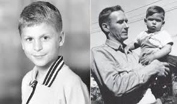
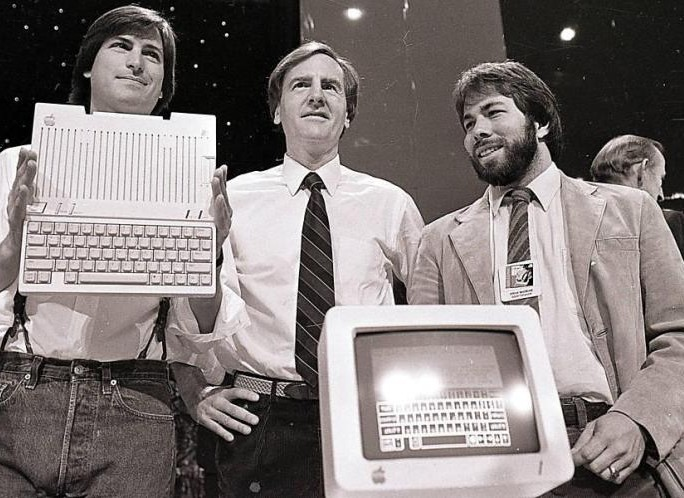
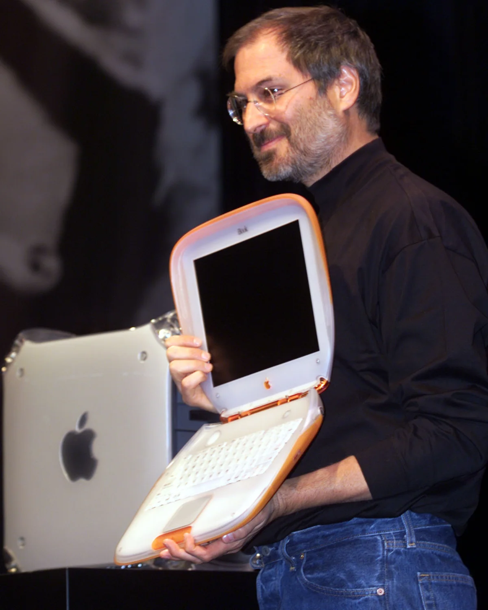
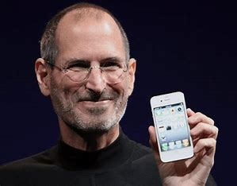
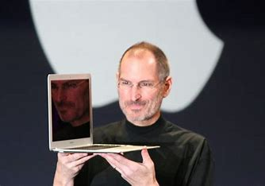

Steven Paul Jobs
was an
American businessman, inventor, and investor best known for
co-founding the technology company Apple Inc.
Jobs was also the
founder of NeXT and chairman and majority shareholder of Pixar.
He
was a pioneer of the
personal computer revolution of the 1970s and 1980s, along with his
early business partner and fellow Apple co-founder Steve Wozniak.
Early days Pre Apple Days Return to Apple Innovation & Design Macintosh    
“Innovation distinguishes between a leader and a follower.” -steve jobs
“You can’t connect the dots looking forward; you can only connect them looking backwards. So you have to trust that the dots will somehow connect in your future.” -steve jobs
“Your work is going to fill a large part of your life, and the only way to be truly satisfied is to do what you believe is great work. And the only way to do great work is to love what you do. If you haven't found it yet, keep looking. Don't settle-steve jobs